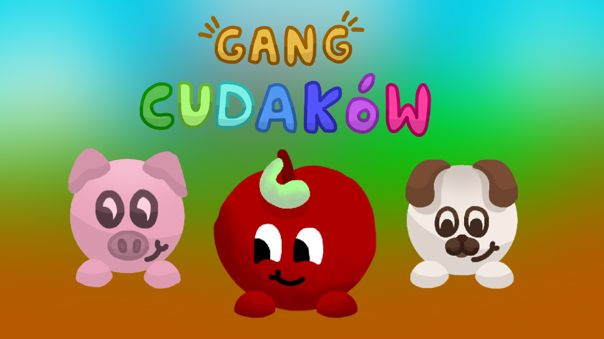

majniakidev
zrobilem gre gang cudaków — można ją zainstalować na google playu :p
Statystyki (ostatnia aktualizacja: 01.10.26)
- 12 aktywnych urządzeń
- Liczba opublikowanych wersji: 5
Aktualności (ostatnia aktualizacja: 01.10.26)
Planowane nowości w wersji 0.2.0:
- Itemki + inventory
- Evil map
- Lootboxy
- Nowa muzyka
- Nowa designy postaci / inne postaci
- Nowy system czapek + no
Planowane nowości w wersji 0.2.1:
- Zmiana nazwy gry
- Moze dzialajace reklamy..?
- jezyk ANGIELSKI dodany i ustawiony jako defaultowy, polski bedzie nadal w menu ustawic.
